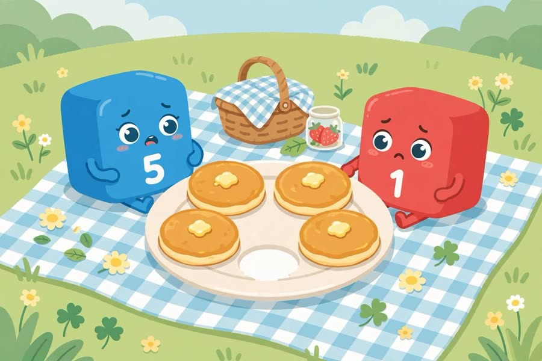
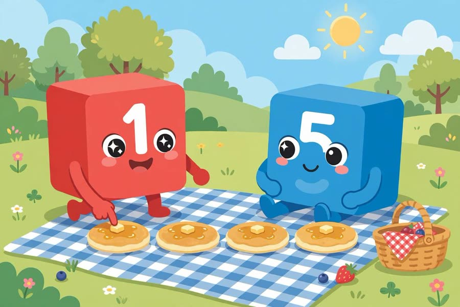

📖 剧情简介
野餐时少了一块煎饼！是煎饼小偷干的。数一数：一个一个点，最后一个数就是总数！
A flapjack is missing from the picnic! The Flapjack Snaffler took it. To count: touch each one, say one number at a time — the last number tells how many!
🎭 角色
一号 One、五号 Five、煎饼小偷 Flapjack Snaffler
（草地上野餐 / A picnic on the grass）
5
Five五号
Picnic time! Five flapjacks!
野餐时间！五个煎饼！
（大家数煎饼 / Everyone counts the flapjacks）
1
One一号
One, two, three, four… hey, where's number five?
一、二、三、四……嘿，第五个呢？
5
Five五号
One flapjack is missing!
少了一个煎饼！

One flapjack is missing!
（煎饼小偷嗖地跑过 / The Flapjack Snaffler zooms past）
F
Flapjack Snaffler煎饼小偷
Snaffle snaffle! Mine!
拿走拿走！我的！
1
One一号
Stop! Let's count properly this time.
停下！这次我们好好数。
1
One一号
Touch each flapjack, say one number at a time: one, two, three, four, five!
每个煎饼点一下，一次说一个数：一、二、三、四、五！

Touch each flapjack, say one number at a time!
5
Five五号
The last number is five — so there are five flapjacks!
最后一个数是五——所以一共有五个煎饼！
F
Flapjack Snaffler煎饼小偷
Oh… sorry! Here's your flapjack back!
哦……对不起！煎饼还给你！
A
All大家
Now we know how to count!
现在我们会数数啦！